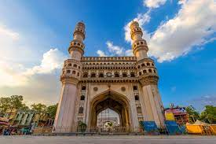
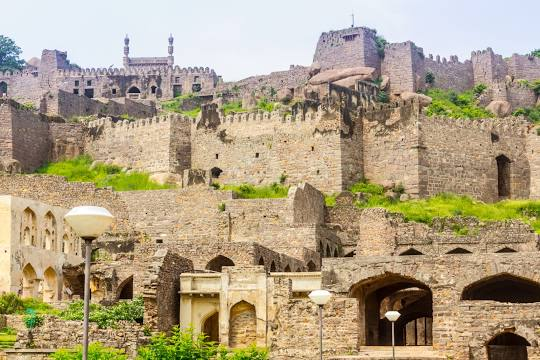
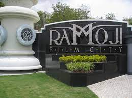
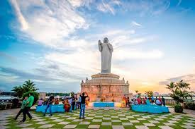

The capital city of Telangana, Hyderabad is a popular tourist destination and presents its visitors with a mesmerising contrastof age old traditions, culture at one end and modern facilities, amenities of a metropolitan city at the other end.Hyderabad is one city, which has no dearth of tourist attractions.
| photo | place description | address |
|---|---|---|
|  | The Charminar constructed in 1591, is a monument located in Hyderabad, Telangana, India. The landmark has become known globally as a symbol of Hyderabad and is listed among the most recognised structures in India. It has also been officially incorporated as the Emblem of Telangana The Charminar's long history includes the existence of a mosque on its top floor for more than 425 years. While both historically and religiously significant, it is also known for its popular and busy local markets surrounding the structure, and has become one of the most frequented tourist attractions in Hyderabad. | Charminar Rd, Char Kaman, Ghansi Bazaar, Hyderabad, Telangana 500002 |
|  | Golconda Fort, is a fortified citadel built by the Qutb Shahi dynasty as the capital of the Golconda Sultanate, located in Hyderabad, Telangana, India. Because of the vicinity of diamond mines, especially Kollur Mine, Golconda flourished as a trade centre of large diamonds, known as the Golconda Diamonds. The region has produced some of the world's most famous diamonds, including the colourless Koh-i-Noor, the blue Hope, the pink Daria-i-Noor, the white Regent, the Dresden | IKhair Complex, Ibrahim Bagh, Hyderabad, Telangana 500008 |
|  | Ramoji Film City is India's only thematic holiday destination with cine-magic. Certified as the World's Largest Film Studio complex by Guinness World Records, it spreads across 2000 acres | NSL Arena, Block 1, Wing B 2nd floor, Plot No. 6, |
|  | iOnce upon a time, Hyderabad was known as City of Lakes. Some of these lakes are natural and various are manmade bodies. As per various sources only a few decades back, Hyderabad had a large number of water bodies such as lakes, reservoirs, rivers, streams, aquaculture ponds, tanks etc. Most of these lakes have totally disappeared and the surface area of most of the surviving lakes have shrunken and turned to tiny ponds and cesspool. Some of the lakes which have totally disappeared are Tigal Kunta, Somajiguda Tank, Mir Jumla tank, Pahar Tigal Kunta, Kunta Bhawani Das, Nawab Saheb Kunta, Afzalsagar, Nallakunta, Masab Tank etc. Hussainsagar Lake, Kunta Mallaiyapalli have shrunk drastically. | Hyderabad, Telangana, India. Map; Timings: 08:00 am - 10:00 pm Details; Time Required: 02:00 Hrs; , |